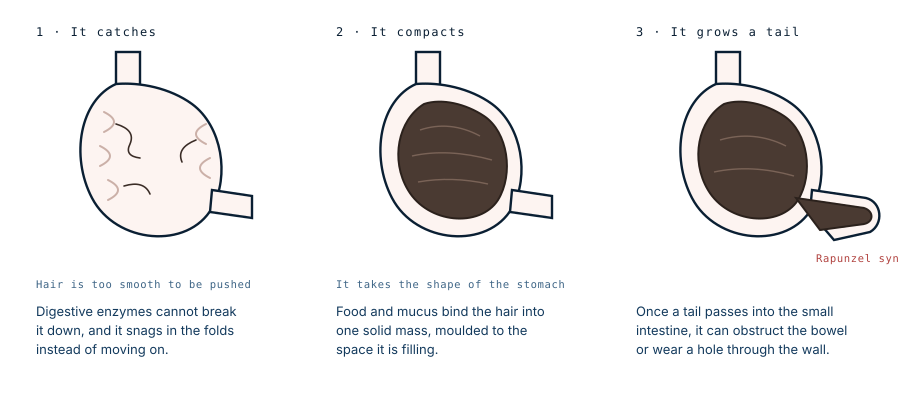

The operation removes the hairball. It does not remove the habit.
A four-year-old was brought to her paediatrician after two weeks of intermittent green vomiting. She had not lost weight and was otherwise well. Her parents mentioned that she sometimes pulled at her hair and ate it, but did not think it was anything much. It had filled her stomach and pushed into her small intestine.
Why hair stays
Almost everything swallowed either gets digested or gets moved along. Hair does neither.
It is made of keratin, a protein that digestive enzymes cannot break down, so it arrives in the stomach intact and stays intact. And its surface is too smooth for the stomach's contractions to get purchase on it, so instead of being propelled toward the outlet it slips backwards into the folds of the stomach lining and lodges there.
Once a few strands are anchored, the process becomes self-feeding. Each new hair tangles into the ones already caught. Food particles and mucus fill the spaces between. Over months the whole thing compacts into a single dense mass that gradually takes the shape of the stomach it is sitting in.

Reported masses have measured 25 or 30 centimetres in length and weighed enough to be visible as a lump through the abdominal wall.
Why the symptoms are so unhelpful
This is the part that explains the delay in almost every published case.
A bezoar large enough to matter has usually been growing for a year or more, and for most of that time it causes nothing at all. Symptoms begin only when it starts to interfere mechanically, and even then they are ordinary: vomiting, poor appetite, vague abdominal pain, sometimes anaemia from chronic irritation of the stomach lining. Every one of those has a hundred more likely explanations in a child.
In this case the only complaint was bilious vomiting, which does at least point somewhere useful. Bile in the vomit means the obstruction sits beyond the point where bile enters the gut, and in a child that finding is taken seriously. She had not lost weight and was otherwise well.
What she did have was a firm mass in the upper abdomen, found on examination. A contrast study then showed the bezoar filling her stomach and extending into the proximal small bowel — Rapunzel syndrome, in a four-year-old.
Her parents already knew
This is the detail that makes the case worth reading, and it is easy to skim past.
The parents reported that their daughter occasionally pulled at her hair and ate it. They knew. What they did not think was that it amounted to anything — they did not consider the behaviour compulsive or obsessive, and on the face of it they had no particular reason to.
They were probably right about the psychiatry. Occasional hair pulling in a four-year-old often is exactly what it looks like, and in children this young it is generally regarded as a milder, more self-limiting thing than the version that starts later. What they could not have known is that the diagnosis does not matter to the stomach. The mass does not care whether the behaviour meets criteria for a disorder. It only requires that hair keeps arriving.
By the time she was vomiting, enough had arrived to fill her stomach and push into her small intestine.
The behaviour behind it
Trichobezoars are almost always the consequence of trichophagia, eating hair, which usually accompanies trichotillomania, pulling it out. Both belong to a family of body-focused repetitive behaviours, and they are more common than most people realise.
Hair pulling starting in very young children is generally regarded as a milder and more self-limiting thing than the version beginning in later childhood or adulthood, which tends to persist and to be linked with anxiety. In either form it is a recognised, treatable condition rather than naughtiness, and it responds to behavioural therapy, most consistently habit reversal training.
What makes it dangerous is the swallowing rather than the pulling. Pulling damages hair. Swallowing builds something in the stomach, silently, for as long as it continues.
Getting it out
Small bezoars can sometimes be broken up and retrieved endoscopically. Large ones essentially cannot, and the published record is consistent about this: attempts at endoscopic removal of a big trichobezoar usually retrieve a few strands and confirm the diagnosis while failing to shift the mass.
The reason is that the thing is a single compacted felt of hair moulded to the stomach. There is nothing to grasp, no natural plane to break it along, and it will not fit through the oesophagus in one piece.
So the definitive treatment is surgical: an incision into the stomach, the mass lifted out whole, the stomach closed. This has been done through open laparotomy, and increasingly laparoscopically in selected patients, though a mass that size still needs an incision somewhere for it to come out through.
If a tail has extended into the small bowel, the surgeon has to trace it and remove that too, and check for damage along its length. Pressure from a tail lying in one place can wear a hole through the bowel wall, and cases of perforation and of the bowel telescoping into itself around the mass are both documented.
The part that decides whether it happens again
Here is the point of the case, and the reason the published reports return to it with such consistency.
Surgery is definitive for the mass and does nothing whatsoever about the cause. A child who is discharged with her stomach repaired, and who goes home and continues to eat her hair, is at the start of the same process again. Recurrence after removal is documented, and it happens for exactly this reason.
That is why every serious account of this condition treats psychiatric assessment and follow-up as part of the treatment rather than as an afterthought, and why the management is described as multidisciplinary: surgeons, paediatricians and mental health together. The operation buys time. The behavioural treatment is what makes the operation the last one.
If you are a parent reading this
Children pull their hair fairly often, and the overwhelming majority never develop anything like this. The thing worth mentioning to a doctor is not the pulling on its own. It is the swallowing.
This family is the reason for that distinction. They had noticed the behaviour and had made a reasonable judgement that it was mild. The judgement about severity is the part that turned out not to matter, because the accumulation depends only on whether hair is being swallowed, not on how compulsive the swallowing looks from outside.
So if a child is eating hair — their own, or from a brush, or from a doll — that is worth saying out loud at a routine appointment even when it seems minor and the child is entirely well. At that stage the problem is behavioural and treatable and nothing has had time to build. It is far easier to address then than after a year of accumulation.
It is also worth knowing that hair pulling is a recognised condition with established treatment rather than a discipline problem. Framing it that way tends to make it easier for a child to admit to, and easier for a parent to raise.
What this case teaches
The parents had already noticed her eating her hair and had concluded it was not serious. That assessment may well have been correct about the behaviour and was irrelevant to the outcome, because a stomach accumulates hair at whatever rate hair arrives. Meanwhile the mass built silently for as long as it took, and only announced itself once it was large enough to obstruct. The operation that follows is the dramatic half of the treatment and the half that does not determine what happens next: unless the swallowing stops, the same mass simply begins again.